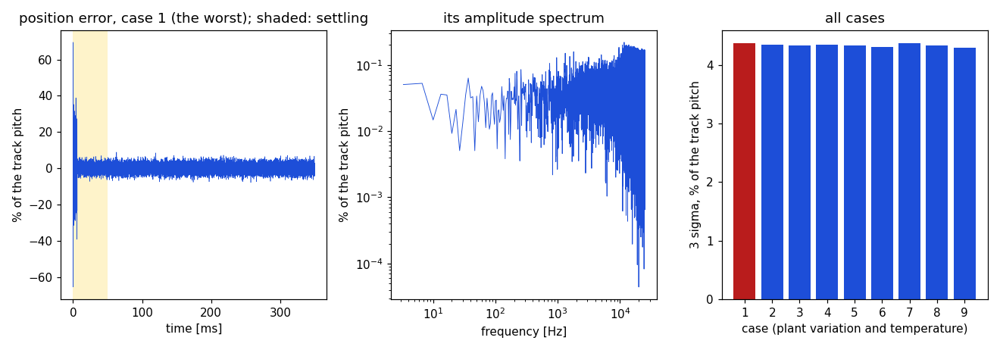

hdd-track-follow-beat5
Hard disk drive, dual-stage head positioning · solved 6 of 6 agent attempts pass
more
Gate: on 0.9 of the seeds the worst case over the nine of 3-sigma must be at most 0.95 x the level of the benchmark's own example controller (the level of the one published learned design, Muto and Uchimura 2023, 5.8 %), with the PZT inside its 50 nm stroke. Not open and not the hard tier: the benchmark states no robustness requirement, its disturbance model is public and linear, and the textbook minimum-variance synthesis (a 77-state LQG on the nominal case, the oracle) reaches 0.41 x the incumbent level on all nine cases, clearing every rung up to beat50, at the price of thin margins (4.3 dB, 24.5 deg). The quick designs do not get there (PID on the VCM alone 2.05 x, notch filters plus PI 1.86 x and outside the PZT stroke, LQG on a rigid-body model 1.27 x); what the tier measures is whether the agent builds the full multi-rate stochastic model. The hard tier of this family is hdd-track-follow-beat25-margins.
Gate. per-seed success is the `beat5` rung of this benchmark's ladder ['stable', 'match', 'beat5', 'beat10', 'beat25', 'beat50'] (`--success-mode beat5`), not the evaluator's default flag; the task is solved when the success rate over the grader's held-out seeds is `>= 0.9`
Axes: plant:hdd, scenario:track_follow_v0, gate:beat5, incumbent:benchmark-example-controller, cases:nine-hidden, domain:time
Each video or figure re-runs the attempt's final controller through the task's own evaluator on a public seed (never the grader's held-out ones). The table under each one is the official grade on the held-out seeds.


track_follow_v0| criterion | graded | needed |
|---|---|---|
| base:beat5 | 1.000 | ≥ 0.900 |
The agent's final message
The controller at `/app/work/controller.py` passes the `beat5` gate on all 15 visible seeds I ran through the official evaluator (0–14), and in fact clears every rung up to `beat50`. Worst-case 3σ is 4.42 % of track pitch against the 14.05 % gate, about 0.30 of the incumbent level. | Check | Result | Limit | | --- | --- | --- | | Worst-case 3σ, official evaluator, seeds 0–14 | 4.42 % max, 4.37–4.38 % mean | ≤ 14.05 % | | Worst-case 3σ, 40 further seeds simulated in-process | 4.32–4.39 % | ≤ 14.05 % | | PZT stroke | 15.0 nm max | < 50 nm | | Controller CPU per rollout | about 0.39 s | 1.5 s | **How it works** - **Per-case LQG regulators.** At import, the file designs one regulator for each of the nine plant cases from the exact model in `hl_control.envs.hdd`, including the fan resonances and the rotational-vibration filter. The cost is the head position at the 20 intersample instants, which is the benchmark's own 3σ. - **On-line case identification.** A regulator built for one temperature is unstable on another, so the first 450 samples of each rollout (inside the unscored settling time) identify the case. Nine Kalman filters run in parallel while a 10 nm pseudo-random probe is added to the PZT command, and the most likely model is locked in. - **Identification margin.** Over 360 rollouts the exact case was picked every time, and the likelihood gap to any wrong temperature was never close. - **Loop margins.** The benchmark's loop-margin certificate, run in-process on seed 0…
Shown: public seed 0 (track_follow_v0); this episode passes the beat5 rung. This episode: sigma3_worst_pct 4.38, ratio_to_incumbent 0.296, worst_case 1, pzt_max_nm 12.8, cases_completed 9, first_failed_case 0, failed_case_steps 0, total_reward -4.38. The plant variation with the largest error of this attempt, run again: position error, its spectrum, and 3 sigma on all nine cases.
controller.py · trial hdd-track-follow-beat5__bzHjxEW